いつもの暇つぶしにグーグルマップで脳内散歩。
すると、とんでもないモノを見つけてしまった！
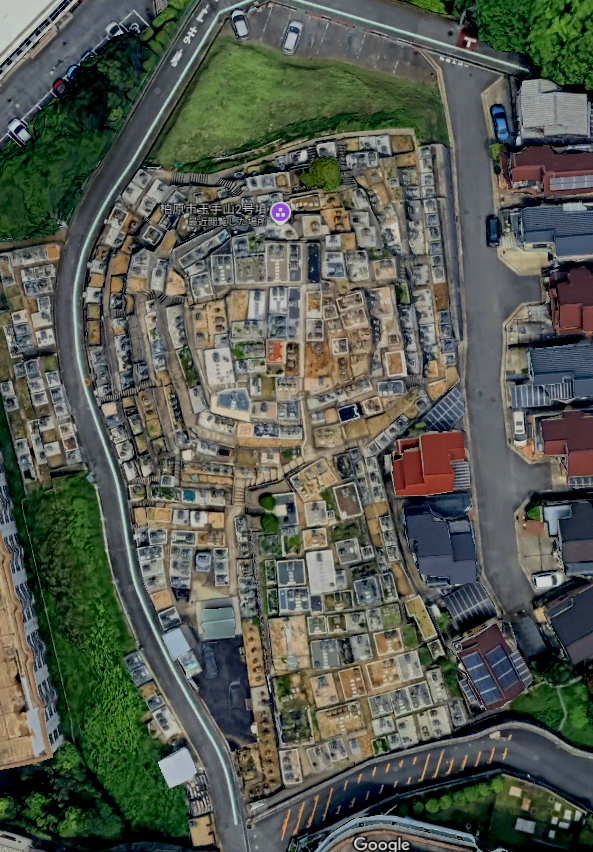
こ☆こ☆こ☆これは…
前方後円墳です…よね？
震える手で3D化する。
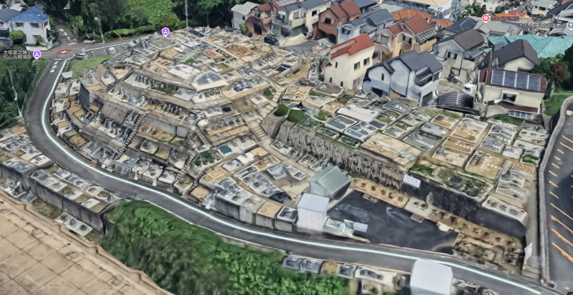
うおおおおお！まごうことなき前方後円墳ではあ～りませんか！
結構な規模の前方後円墳に
びっしりと現代の墓地が貼り付いているのだ！
あまりの凄い光景にしばしフリーズ。
場所は大阪府の南東部、柏原市。
その名を
玉手山2号墳という。
そもそも古墳って豪族とかやんごとなき方々のお墓じゃないの？
その上に庶民（かどうかは知らないが）の墓を建てていいの？
百聞は一見に如かず、というわけで実際に見に行ってみることにした。
当サイト初の古墳案件である。
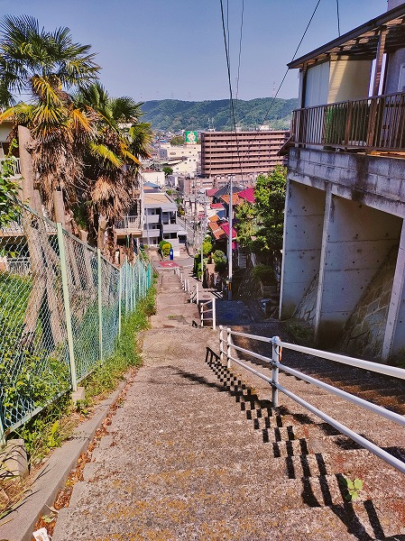
…というわけで近鉄の河内国分駅から歩く。
地図で見たら近かったのに実際に歩いてみると急な階段が延々と続く。
凄い高低差だ。
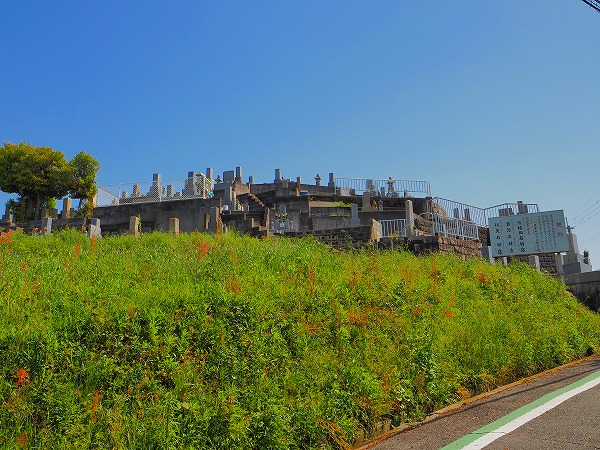
で、ようやく問題の古墳？墓地？が見えてきた。
ここには10基の古墳が南北に連なっており、件の古墳は2号古墳、つまり北から2番目の古墳となる。
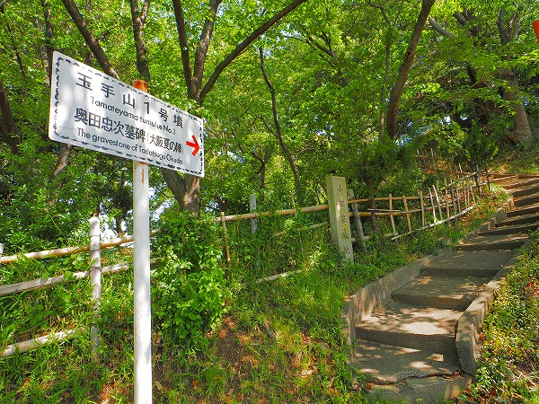
取り敢えず1号古墳に登って2号古墳の全景を眺めてみようか。
…美味しいものは最後にとっておきたいタイプなもんで。
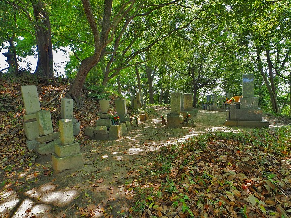
1号古墳は古墳、というより古い墓が並んでいるだけだった。
古墳自体は4世紀前半に出来た前方後円墳である。
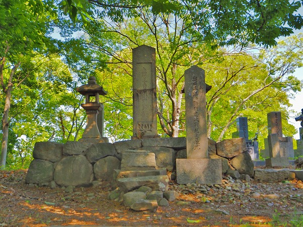
立派な石碑が並んでいる。
この1号古墳は徳川豊臣の最後の決戦、大坂夏の陣で戦場になった地なのだ。
そこで戦死した徳川方の武将一族の供養塔だという。
大阪城から随分離れたところで戦をしていたのですなあ。
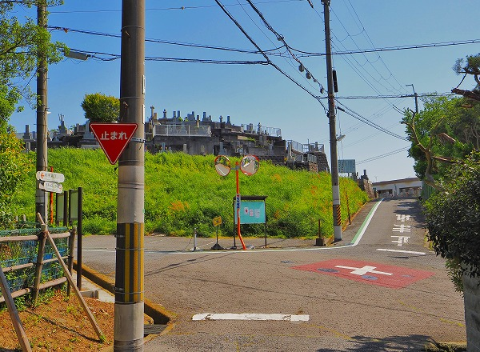
で、その1号墳から2号墳を眺めてみる。
丁度円墳状の部分が見える。
今回、航空写真やドローン以外ではどこがどこだかよく判らない写真が続くので、図中に古墳と撮影位置を示してあるので参考にしてくだされ。
というか
脳内でがっつり再生してもらわないとよく判んないからね！
というわけで1号墳から下りて2号墳に向かう。
円墳部分の
もっこり具合を感じていただけている事と思うが…如何ですか？
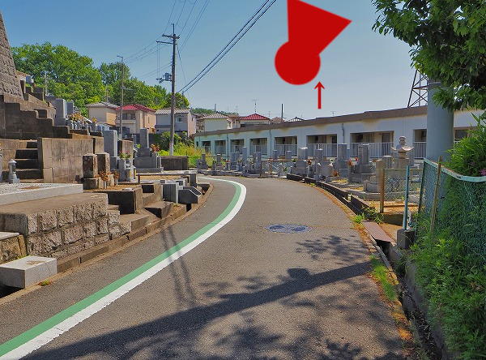
私の古墳鑑賞の師匠である古墳にコーフン教会会長の
まりこふんさんによれば、前方後円墳鑑賞の肝は
くびれ探しだという。
つまり円墳部と方墳部の繋ぎ目の「くびれ」を見ることで前方後円墳全体の姿を
心の眼で感じるのが鑑賞のポイントなのだという。
というわけで私もくびれ探しに参る！
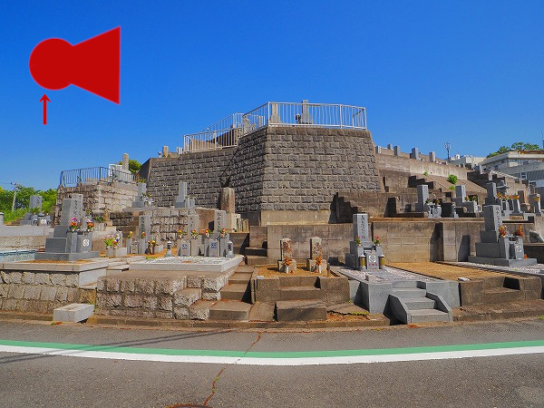
円墳部の西側。
それなりの高低差があることが判る。
くびれはもう少しだ。

そして
くびれ部分！
奇しくも歩道のカラー舗装がそのくびれを見事に表している。
うーん。ナイスくびれ！
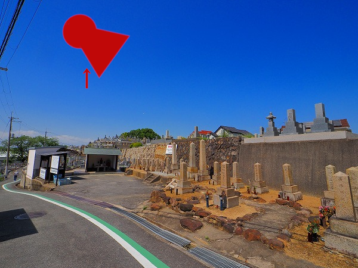
さらに進むと現在の墓地の入口が現れる。
地蔵や水屋、兵隊さんの墓石が並ぶ。
折角なので墓地の中にお邪魔する。
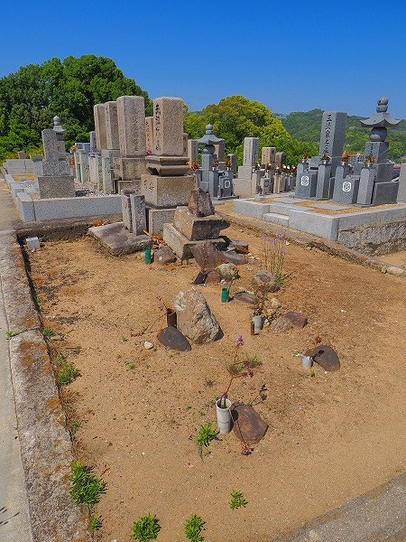
一体どういう経緯で古墳が墓地になってしまったのかは知る由もないが中に入ってしまえば高低差はあるものの普通の墓地だった。
墓地は新しいものがほとんどだったが中には古いタイプ（土葬墓の痕跡を残す墓）もあった。
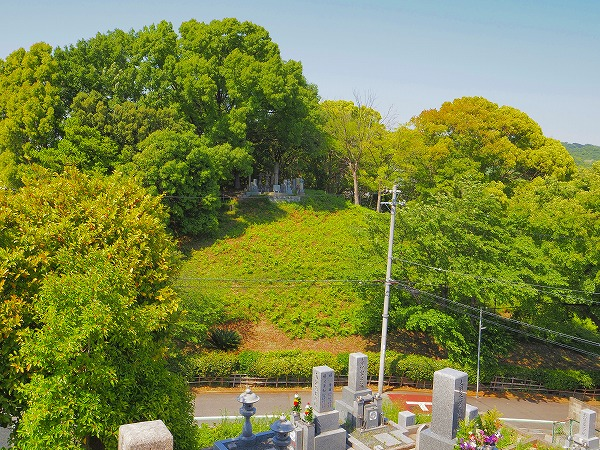
2号墳から1号墳を眺めてみる。
1号墳と2号墳は円墳部が向き合っている状態なので円墳から円墳を眺める事となる。
先程の徳川方の武将一族の供養塔も見える。
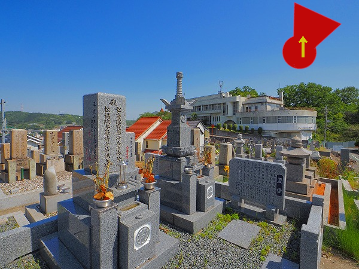
この辺りが円墳部の最頂部、つまり一番高いところ。
立派な宝篋印塔が建っていた。
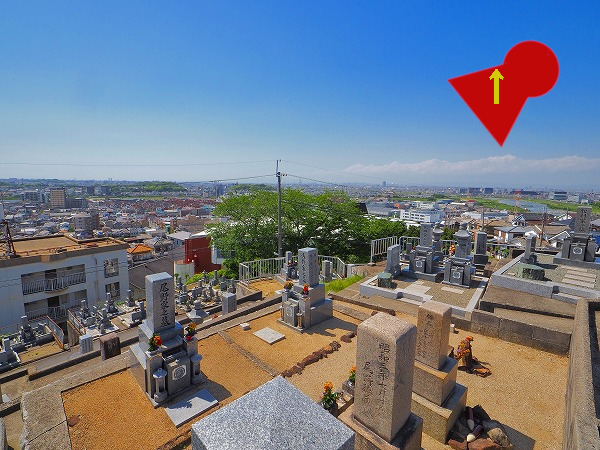
やや下がった所から西側を眺める。
遠くに大阪市街が見える。
なるほど、大阪城から20キロ程離れた地だが、ここなら大阪城の様子も良く判っただろう。
陣を張るには最適の場所だった訳だ。
大阪城は確認できなかったが
あべのハルカスはよく見えた。
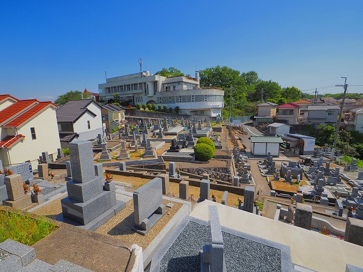
方墳部からの南側には老人福祉センターがある。
ここの屋上から撮影させていただければこの古墳の全景も収められたかもしれないが、時節柄、外部者は入れないだろう。
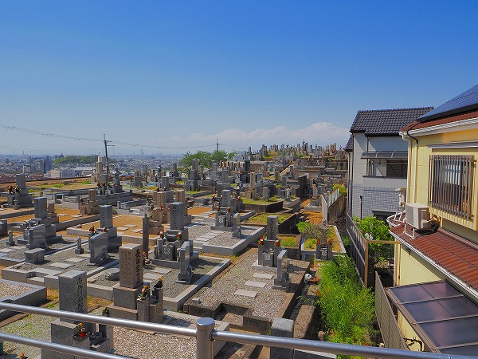
取り敢えず南端から見るとこんな感じ。
うーん。やっぱり心の眼で見ないと古墳全体のシルエットが想像できない！
で、再びくびれ部へ。
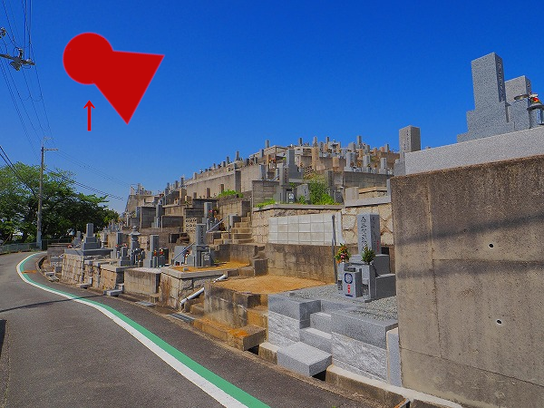
地上から古墳らしさを感じられるのはやはりここ位かあ。
まあ、古墳というものはそもそも神の目から見えれば良いものなのだろう。
だから下々は
地上からその手の付けられない程の大きさを感じて慄けばいいのだからある意味正しい鑑賞法だった…んでしょう。多分。